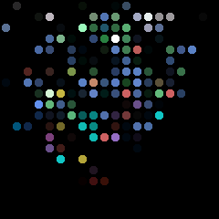

After Images
A generative ambient composer for the M-VAVE FM-1. Press REC and it writes a new piece: four layers (GROUND, BODY, LIGHT, DUST), each with its own sequencer and sound in its own part of the spectrum, answering each other, always in key and always evolving. Press REC again and the next piece follows on round the circle of fifths.

Version 3.10 · Install it · User guide · Play it in your browser · Source
What it does
- One button, a whole piece: a key, a tempo, four sounds, four sequencers, a featured effect, a palette and a name.
- Pieces that lead on: each new key is a fifth away, the relative minor or major, or another mode on the root. Hold REC to stay in key.
- Systems, not dice: eleven sequencers, from Euclidean rings and Markov chains to the Lorenz attractor and Conway's Life, patched so one layer's notes nudge another's.
- Thirty engines: FM, DX, phase distortion, wavetables, plucked strings, mallets, a singing bowl, a choir, an organ, an 80s string machine, a PWM pad, a ladder-filter bass, synth brass, a bowed string, pitched wind, a Reese bass and more, each with its own ENTROPY.
- An ambient mixer: DRIFT fades the layers in and out, walks them round the stereo field and slowly morphs their effects and character.
- Four personalities: ANALYST (anything goes), SENTINEL (dark, sparse drones), DIPLOMAT (distant pads in shimmer and echo) and EXPLORER (analogue synthwave arpeggios over a melodic bass): what REC favours.
- Shimmer, reverse echo, chorus ensembles and tape: shared effects with a send for each layer.
- Three visuals: MATRIX, RORSCHACH and MOSH, each breeding colour from the music.
- Plays with your gear: follows MIDI clock to the beat and the bar (an Ableton Move, say), sends each layer on its own MIDI channel and records over USB audio.
Quick start
- Open the installer in Chrome or Edge on a computer, plug in the FM-1 by USB and follow the page.
- It starts playing. K1 to K4 set the four layers' levels.
- REC for a new piece; held, a new piece in the same key.
- Hold HOME and turn K1 to K4 for the macros: MOOD, ACTIVITY, EVOLVE and DRIFT.
- The white keys play the scale and the black keys its chords, on the layer SEL picks.
- SAVE keeps a piece; ALGORITHM steps through your saved ones.
- Stop with PLAY before switching off: a few seconds later it keeps the piece and your settings.
The user guide covers every page and setting, with ideas to try.
Installing and safety
The installer works over M-VAVE's own firmware or another FM-1 firmware, on FM-1s with either flash chip, and can put M-VAVE's firmware back at any time. After Images is unofficial: you install it at your own risk. For the command line, download after-images-3.10.fwsc and use fm1-base's installer: python3 tools/fm1_install.py after-images-3.10.fwsc. Problems and ideas are welcome as issues.
Made by TheGrizard on fm1-base and felucca-bsp. Free software under the MPL-2.0.
M-VAVE and FM-1 are trademarks of their owners. After Images is not affiliated with M-VAVE.